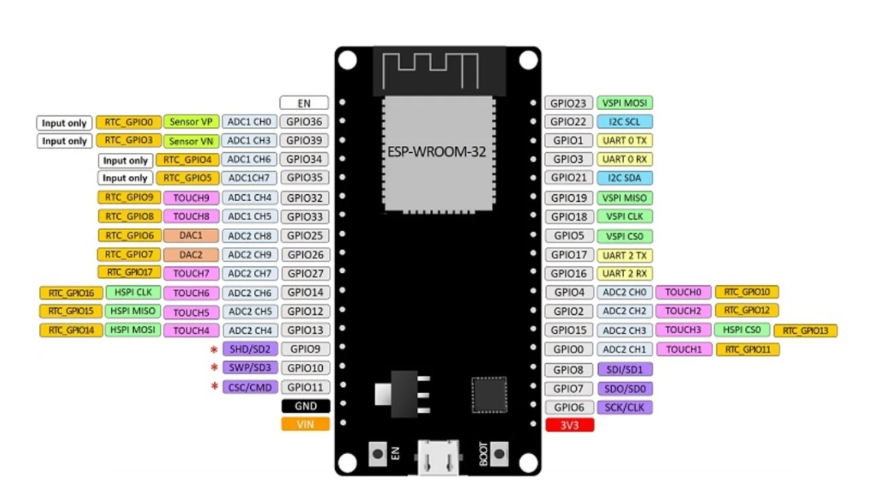
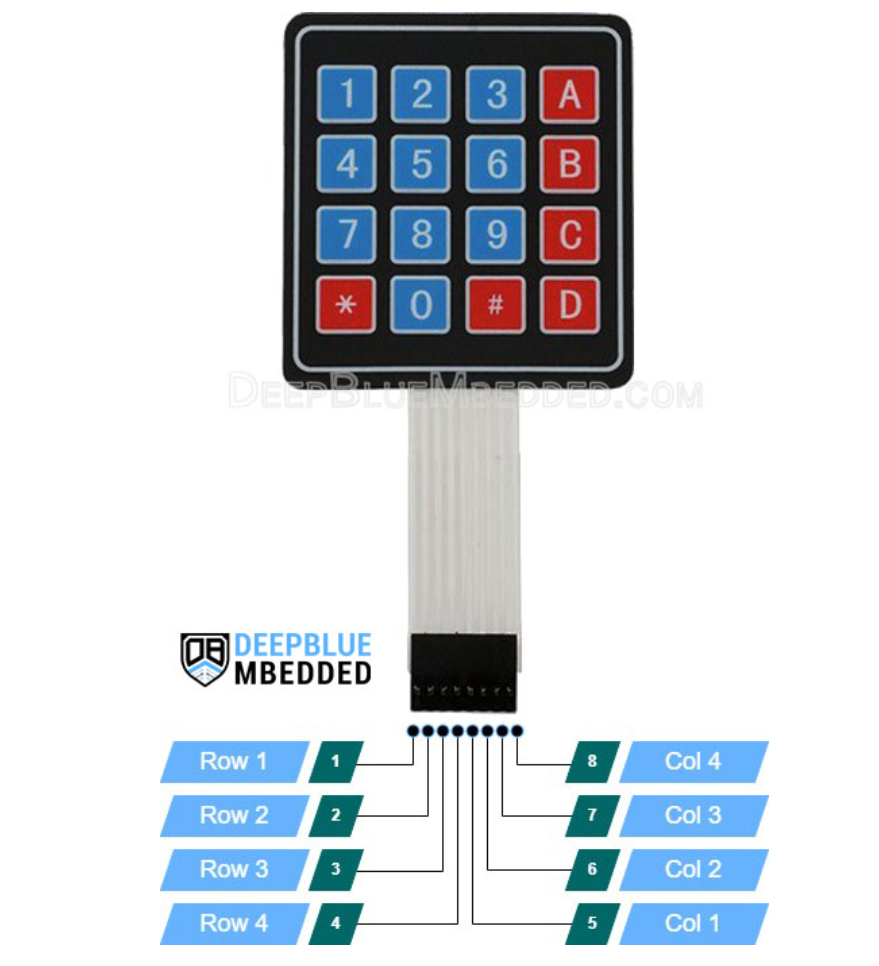
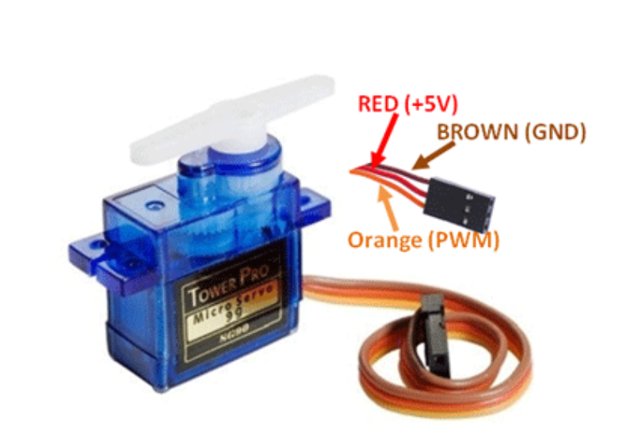

GatePass
Une serrure intelligente à code, pilotée par un ESP32 et un servomoteur
HALIOTIS NTSOA Randriambololona · 2936
FETISON Mioralalaina Câline · 4610
RAFIDIMANANTSOA Rova Nandrianina · 4634
Notre présentation
en trois parties
Le projet
Objectif, principe de fonctionnement
[Câline]La technique
Matériel, câblage, logiciel, servomoteur
[Ntsoa]Bilan
Retour utilisateur, limites, perspectives
[Nandrianina]Le projet en chiffres
Objectif : saisir un code sur un clavier, et si le code est bon, la porte s'ouvre toute seule.
Comment ça marche
Touche * : efface la saisie en cours (double bip)
Le matériel utilisé
Aucun capteur. Seul périphérique d'entrée : le clavier.
ESP32 DevKit
Pinout de référence

Clavier 4×4
Membrane · 8 broches (lignes + colonnes)

Servomoteur
Rotation continue · Rouge +5V · Marron GND · Orange signal

Le câblage ESP32
| Composant | Broches |
|---|---|
| Clavier – lignes | GPIO 18, 19, 14, 27 |
| Clavier – colonnes | GPIO 26, 25, 33, 32 |
| LCD I²C | SDA: 21 · SCL: 22 |
| Servomoteur | Signal: GPIO 12 |
| Buzzer | Signal: GPIO 23 |
Architecture logicielle
Lecture clavier, saisie, affichage LCD, buzzer, vérification du code
unlockDoor(), lockDoor(), turn_left(), turn_right(), stop()
- C++ + framework Arduino
- PlatformIO (carte esp32dev)
- Keypad · ESP32Servo · LiquidCrystal_I2C
Le servomoteur
Comment il verrouille
- Servo à rotation continue : durée = mouvement
- writeMicroseconds() règle sens et vitesse
- Verrouillage temporel (pas de capteur de position)
Retour utilisateur
- Invite à saisir le code
- Caractères saisis en direct
- Résultat : correct ou incorrect
- 1 bip court → touche pressée
- 1 bip long → code correct
- 3 bips courts → code incorrect
- 2 bips → saisie effacée
Tous les événements aussi sur le port série (115200 bauds)
Les limites
Prototype pédagogique, pas un verrou certifié
Code en dur, essais illimités, saisie affichée en clair
Pas de capteur : état verrouillé supposé au démarrage
Utilise delay() : des touches peuvent être manquées
Bibliothèque déclarée mais pas encore utilisée
Améliorations prévues
Code en NVS, saisie masquée, temporisation après échecs
Capteur de fin de course ou contacteur à lame souple
millis() à la place de delay()
Contrôle à distance via Blynk, journal horodaté
Merci de votre attention
- Un code saisi, un servo, une porte qui s'ouvre seule
- Prototype fonctionnel ESP32, extensible, licence MIT
- Base solide pour une vraie serrure connectée
Code source disponible sur GitHub · Licence MIT